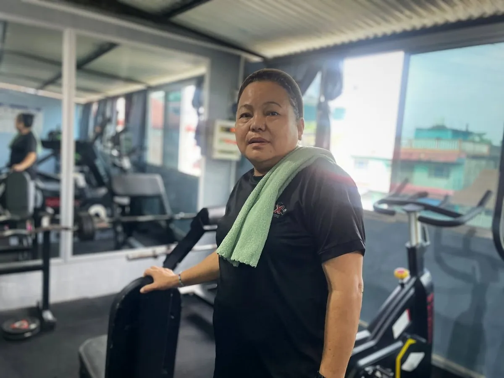
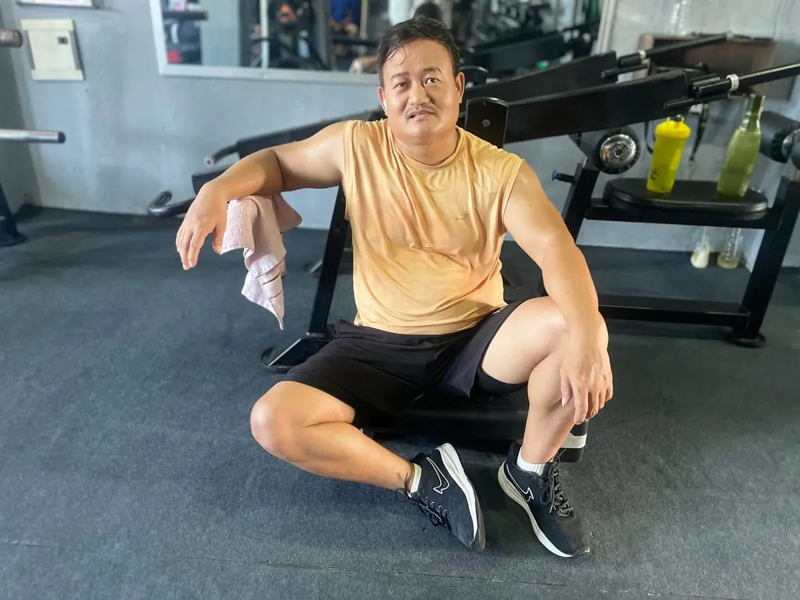

Muscle Soreness After the Gym: Normal Pain vs Injury (and How to Recover)
Sore after the gym? Why DOMS happens, how long it lasts, how to recover faster, and the warning signs of a real injury.

Feeling sore one or two days after a workout is normal, especially when you are new or try a new exercise. It is called DOMS (delayed onset muscle soreness). It usually peaks 24 to 72 hours after training and fades within a few days.
Sharp, sudden or one-sided pain is different. That can be an injury, and you should treat it differently.
Why muscles get sore
When you challenge your muscles in a new way, especially with the lowering part of a movement (walking downstairs, lowering a weight, downhill hiking), you create small amounts of muscle damage. Your body repairs it, and that repair process brings soreness and stiffness.
The good news: soreness reduces quickly once your body gets used to an exercise. After 2 to 3 weeks of regular training, most beginners are barely sore anymore.

Normal soreness vs injury
| Normal soreness (DOMS) | Possible injury |
|---|---|
| Starts 12–24 hours after training | Starts suddenly, during the exercise |
| Dull, achy, stiff feeling | Sharp, stabbing or burning pain |
| Both sides, whole muscle | One spot or one side |
| Better with gentle movement | Worse with movement |
| Fades in 2–5 days | Lasts longer than a week or gets worse |
| No swelling or bruising | Swelling, bruising, a pop sound, or weakness |
| Joints feel fine | Pain in the joint itself (knee, shoulder, back) |
See a doctor urgently if you have very severe muscle pain with weakness, swelling, or dark (cola-coloured) urine after an extreme workout. That can be a sign of a rare but serious condition called rhabdomyolysis.

Rest, food and sleep are when your muscles actually recover. Photo: Apex Fitness Centre, Urlabari.How to recover faster
- Keep moving. Light walking, cycling or an easy workout of the same muscles increases blood flow and often helps more than rest.
- Sleep 7 to 9 hours. Your body repairs muscle while you sleep.
- Eat enough protein across the day. See how much protein you need.
- Drink water.
- Gentle stretching or foam rolling can make you feel better, even if the effect on recovery is small.
- A warm shower relaxes stiff muscles.
Should you train while sore?
- Mild soreness: yes, train as normal or train a different muscle group. Soreness usually eases once you warm up.
- Very sore: do a lighter session or train a different body part.
- Pain that feels like an injury: stop and rest that area, and get it checked if it does not improve.
How to avoid being extremely sore
- Start light in your first weeks. Your first workout should feel almost too easy.
- Add volume gradually. Do not jump from nothing to 25 sets for legs.
- Train regularly. Soreness is worst after long breaks.
- Be careful with new exercises, especially lunges, deadlifts and downhill walking.
Does soreness mean the workout was good?
No. Soreness is not a measure of progress. You can build muscle and strength without being sore. The real signs of progress are lifting more weight, doing more reps, and better form over time.
Frequently asked questions
How long does muscle soreness last?
Usually 2 to 5 days, peaking around 1 to 2 days after training.
Is it okay to go to the gym with sore muscles?
Yes, with mild soreness. A light session often helps. Avoid training hard on very sore muscles.
Do painkillers help soreness?
They can reduce discomfort, but regular use just to train through soreness is not recommended. Ask a doctor or pharmacist if you need them.
Why am I more sore 2 days after the gym than the next day?
That is typical of DOMS. Soreness usually peaks 24 to 72 hours after exercise.
Sources
- Delayed onset muscle soreness: treatment strategies and performance factors (Cheung et al., Sports Medicine, 2003)
- ACSM position stand: progression models in resistance training for healthy adults (American College of Sports Medicine, 2009)
General information, not medical advice. If pain is severe, sharp or lasts more than a week, see a doctor or physiotherapist.
General information, not medical advice. Ask a doctor if you have a health condition. Results vary from person to person.